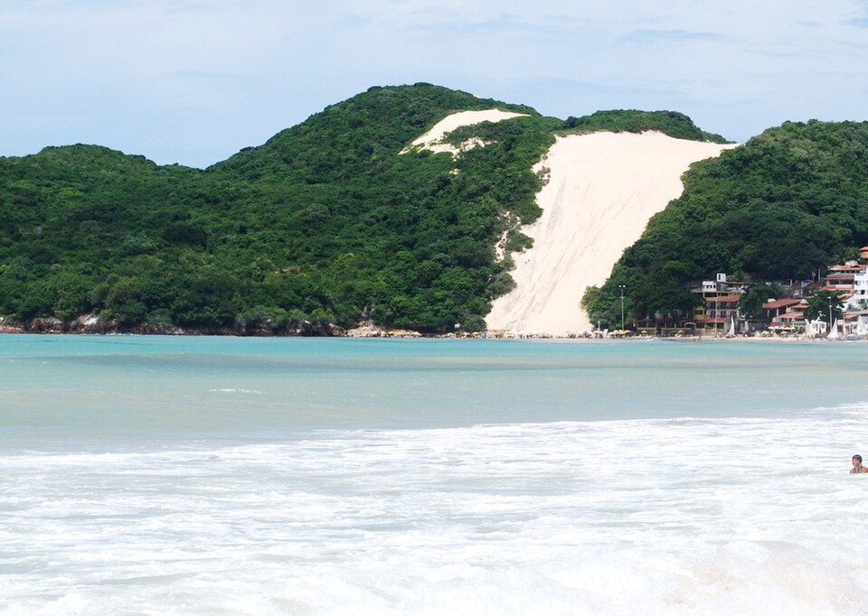
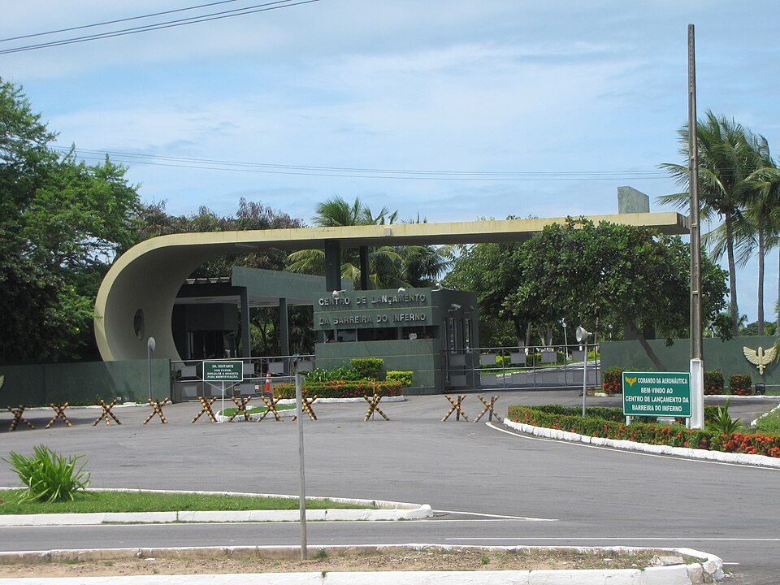
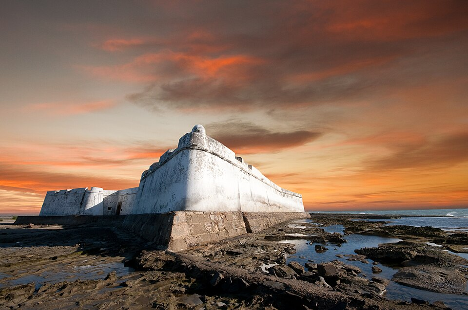
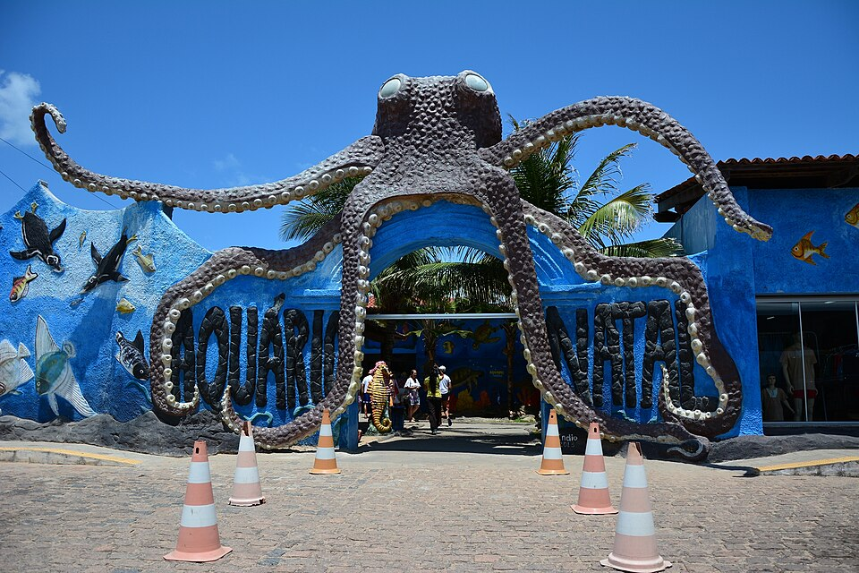

Pontos Turisticos de Natal
Natal é um destino fascinante que mistura praias exuberantes, natureza preservada e muita história, oferecendo atrações imperdíveis para todos os perfis de viajantes. Sua jornada pela capital potiguar pode começar pelo icônico Morro do Careca, a famosa duna que emoldura a Praia de Ponta Negra, e seguir para o impressionante Parque das Dunas, ideal para caminhadas em meio à Mata Atlântica. Para quem busca história e ciência, o imponente Forte dos Reis Magos revela as origens da cidade, enquanto o Centro de Lançamento da Barreira do Inferno reconta o pioneirismo aeroespacial do país. Por fim, a viagem se completa com a vista panorâmica deslumbrante do Farol de Mãe Luíza e o divertido contato com a vida marinha no Aquário de Natal, garantindo um roteiro inesquecível e diversificado na "Cidade do Sol".
Morro do Careca

O Morro do Careca é uma duna de aproximadamente 107 metros localizada no extremo sul da Praia de Ponta Negra, em Natal, Rio Grande do Norte. É um dos principais símbolos turísticos da cidade.
Barreira do Inferno

Fundada em 1965, a Barreira do Inferno é a primeira base de lançamentos de foguetes da América do Sul. Localizada em Parnamirim, próximo a Natal, realiza operações da Força Brasileira com foguetes pequenos e médios.
Forte Dos Reis Magos

Forte dos Reis Magos é uma edificação militar histórica localizada na cidade de Natal, no estado brasileiro do Rio Grande do Norte. É administrada pela Fundação José Augusto, fundação do Governo do Rio Grande do Norte.
Aquario de Natal

O Aquário Natal, em Extremoz, Rio Grande do Norte, é um aquário privado inaugurado em 1999. Abriga cerca de 200 animais de 60 espécies, incluindo tubarões, pinguins e jacarés, além de apoiar o Projeto Tamar.